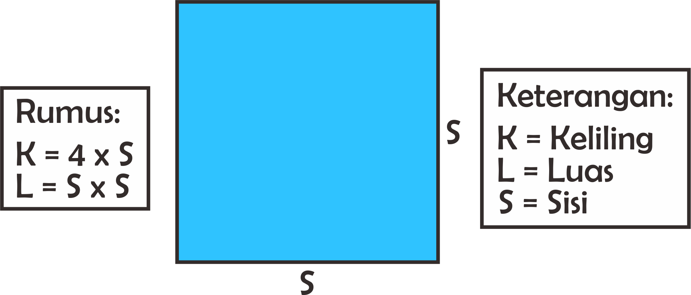

Welcome to KATIK
Hai... Selamat datang di Katik.
Situs ini akan membantu anda untuk menghitung luas dan keliling bangun datar dengan lebih cepat dan mudah.
Silahkan pilih bangun datar yang ingin anda hitung.
Persegi

Hai... Selamat datang di Katik.
Situs ini akan membantu anda untuk menghitung luas dan keliling bangun datar dengan lebih cepat dan mudah.
Silahkan pilih bangun datar yang ingin anda hitung.